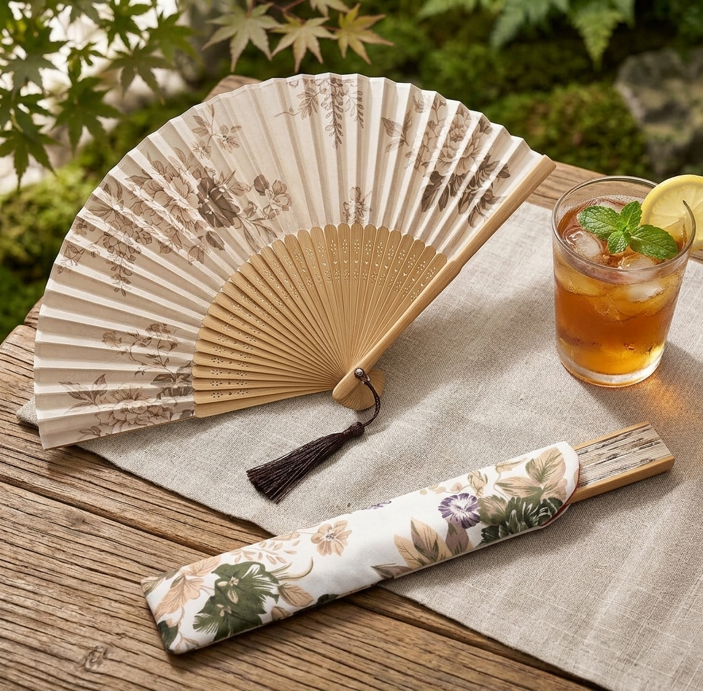

A Japanese-style folding hand fan with a floral print, tassel, and matching pouch, made for hot days, travel, and events.

It never dies, never needs charging, and it is silent.
Carved bamboo ribs with a soft floral fabric make it a pretty accessory as well as a cooling tool.
It folds down and slips into the included pouch for a bag, suitcase, or gift box.
Folding fans have been part of Japanese summers and formal dress for centuries. This one keeps the look while staying easy to carry.
It is a simple, thoughtful gift for weddings, tea events, travel, or summer festivals.
Cool down and look the part.
A pretty accessory that is also useful.
Folds small for a bag or suitcase.
It is Japanese-style in design. Check the product page for the exact origin details.
About 8.3 inches when folded out, so it fits a purse.
Yes, a matching fabric pouch and tassel are included.
A bamboo and silk-style folding hand fan - see current pricing and availability on Amazon.
Check Price on Amazon →